Open questions
One question per card. Each choice has its picture right under it.
2 open · updated 2026-11-16
Hana from your outline
Built from your picture: mauve outside her became the teahouse room, the gaps in her hair are filled dark. Her hair keeps the game's navy strands; in your picture the whole hair is near-black. Each picture: before | now | your picture.
Is Hana right now?
Hana, close up and whole scene
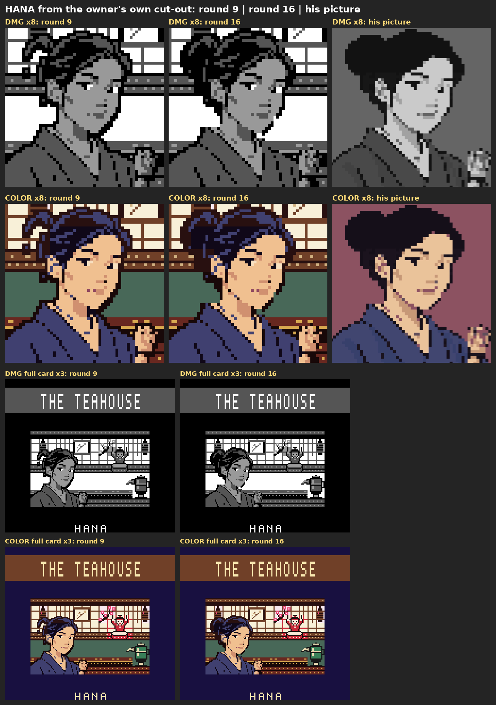
Q74) Right / still wrong (say where)
Coach: dark fill, no blue under the brim
Left: dark fill. Right: now, with the last blue pixels under the brim made dark too (13 pixels in all).
Is Coach's brim right now?
Before and now
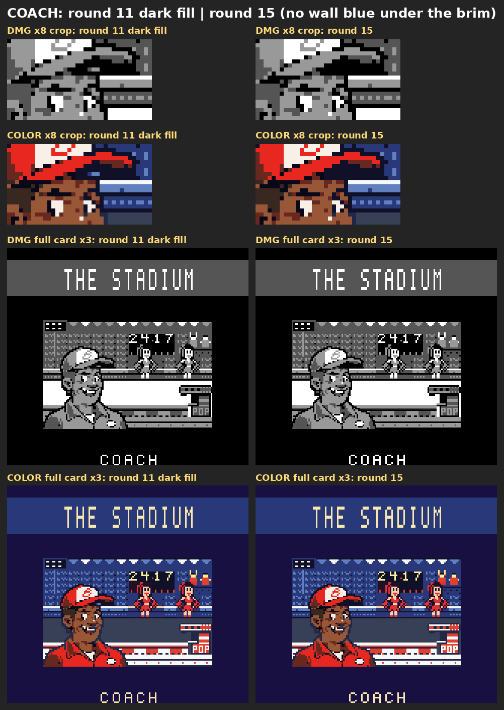
Answered 11-16: "Coach brim good."
Kiki: "no mouth dots"
Pigtails stay as they are now. For the mouth I can read your words two ways.
Which do you mean by "no mouth dots"?
Keep the game's mouth, not your red one
The mouth stays orange-brown, as now.
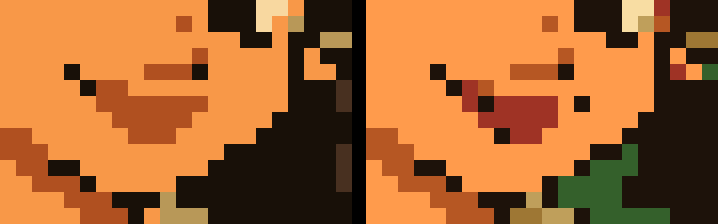
Remove the single dark pixels by the mouth
The lone black pixels at the mouth's left corner and at the right end of the upper lip become skin.
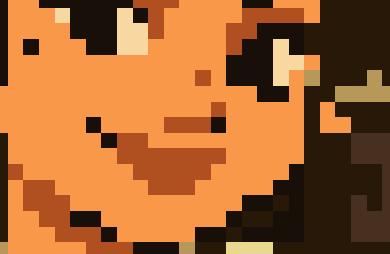
Q72) Keep game mouth / remove dark pixels / both
Kiki: pigtail and mouth colours
Kiki is built from your cut-out. Your picture differs from the game's Kiki art in two places; I kept the game's art until you say. The counter corners are gold again; to get the near-black, the counter's darkest pixels across the zoo bar changed from olive to near-black brown.
Should Kiki's pigtails be near-black and her mouth red, as in your picture?
Pigtails: game's brown or your near-black
Middle: game's art (brown pigtails). Right: your picture (near-black).
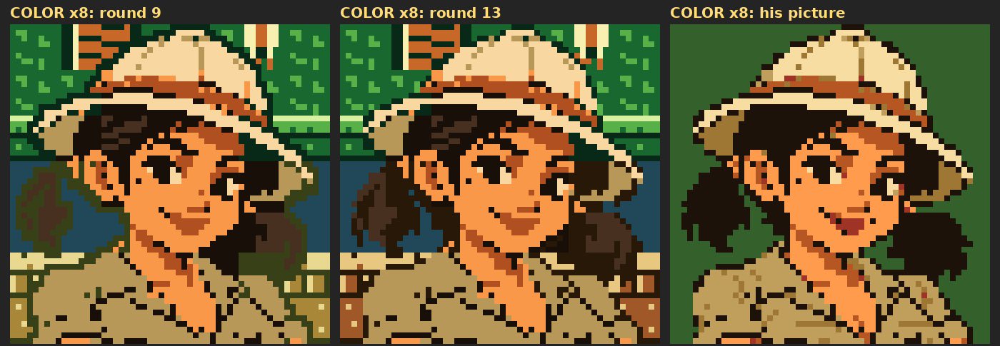
Mouth: game's orange-brown or your red
Left: game. Right: your picture.
Whole scene, Color
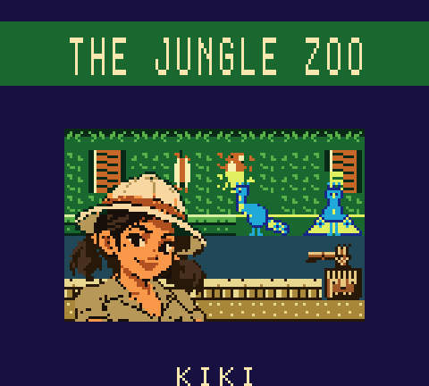
Answered 11-16: "Kiki's pigtails are better, but no mouth dots." Pigtails kept; mouth asked in Q72.
June from your cut-out
Built from your picture: blue became the lodge room, everything else is June, including the dark hair left of her neck. Each picture: before | now | your picture. Your picture has two blue specks inside the hat (left edge of the white part, halfway down); they show the room through the hat.
Is June right now, and should the two hat specks be hat?
June, close up and whole scene
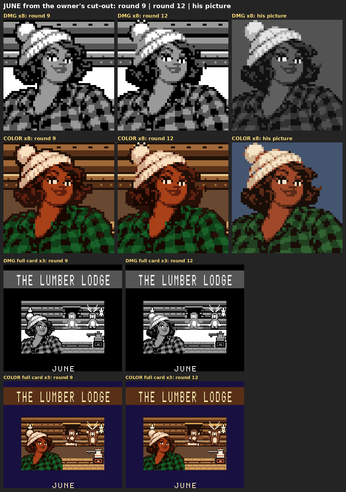
Answered 11-16: "June looks good now." Round 12 kept as is, specks included.
Coach's brim: fill the last bit
Only the leftover gap under the brim tip changes, about 10 pixels. Each picture: before | light fill | dark fill | your painting.
Which fill for the gap under Coach's brim?
Light fill or dark fill
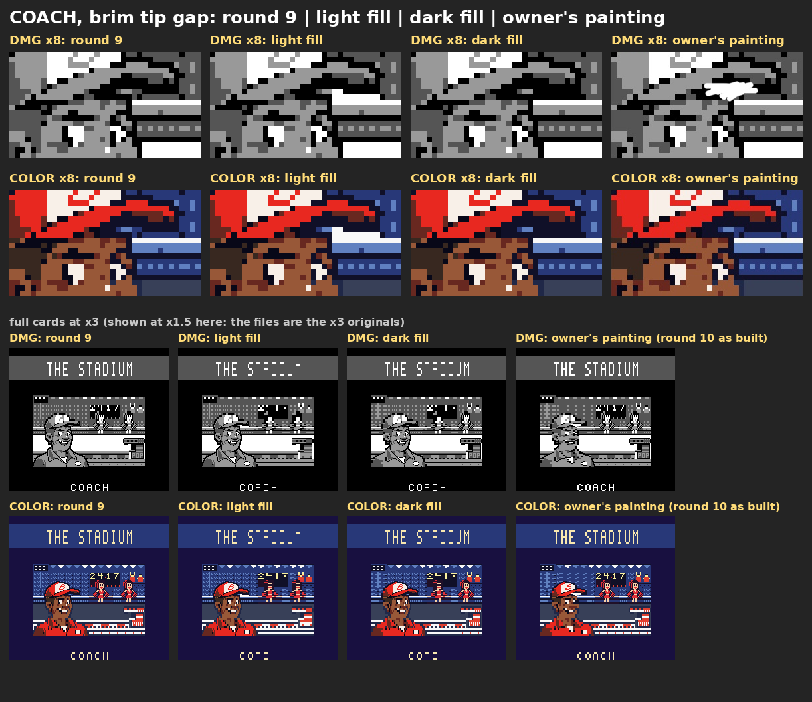
Answered 11-16: dark fill, and no blue pixels under the brim. Being made.
June's neck: dark up to your line
Each picture: before | to the line (3 pixels) | to the line plus the thin wall strip on the same row (9 pixels) | your mark.
Which is right for June's neck?
To the line, or line plus strip
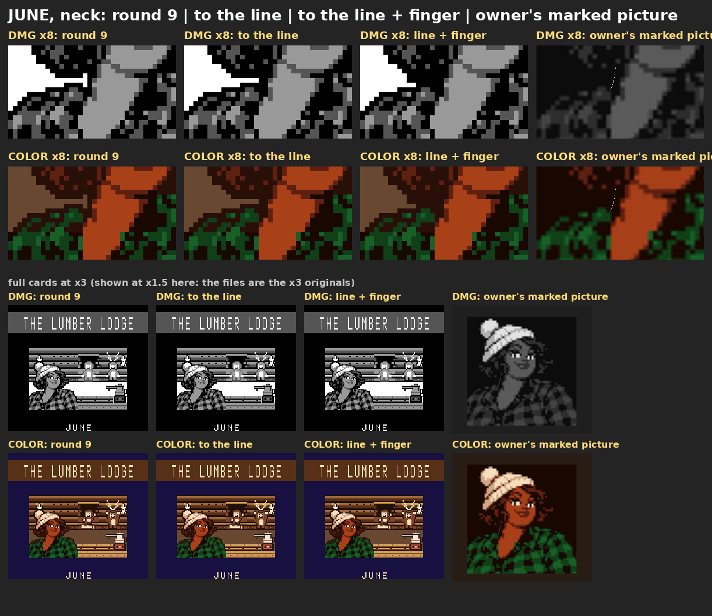
Answered 11-16 with your own cut-out of June. Being built from it.
June's neck, cut at your line
Left of her neck the dark block is gone: the lodge wall runs up to a 2-pixel dark edge at your line. Her hair is unchanged. Not in the test ROM yet.
Is June's neck right now?
Close up
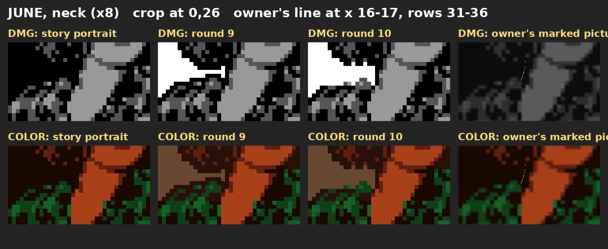
Whole scene, DMG and Color
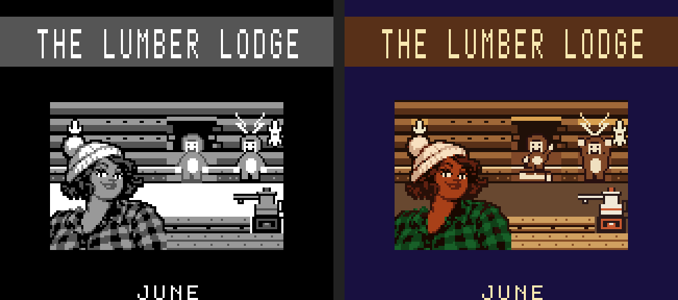
Answered 11-16: "filled in with dark up to where I drew the line." Being made.
Coach's brim, made as you painted
Under the brim tip is now light, joining the rail behind him. The brim keeps its dark line. Not in the test ROM yet.
Is Coach's brim right now?
Close up

Whole scene, Color

Whole scene, DMG

Answered 11-16: "I just wanted that last little bit filled in." Smaller fix being made.
Credits scenes: dark edge under brims and hats
Each picture: story portrait | before | now. Every owner now has a 2-pixel dark edge under brims, hats, hair and chins, where the room shows through. Only edge pixels changed. Not in the test ROM yet.
Does Coach's brim read right now?
Coach's brim, close up
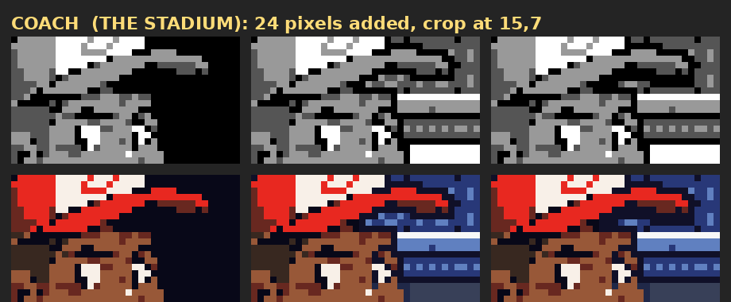
All owners

Answered 11-16: painted light under the brim tip, "More like that." Being made.